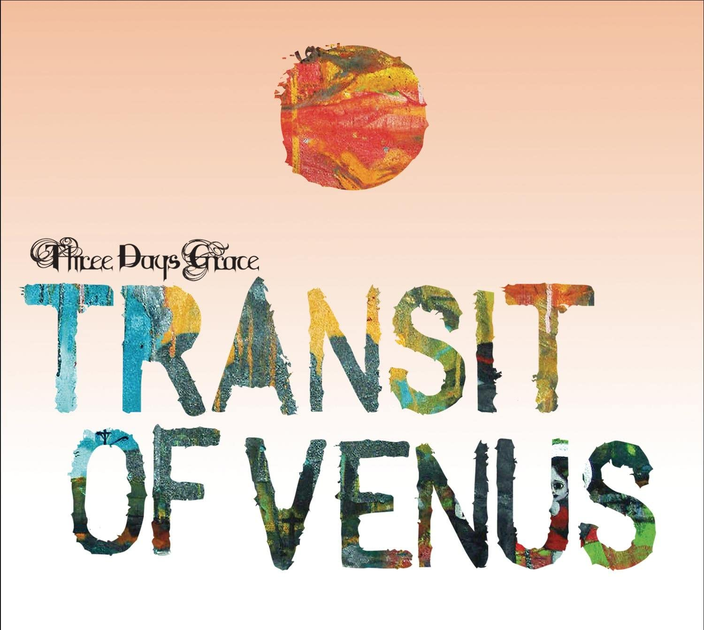

Outsider (2018)
The latest album, with title song "I am an Outsider"

Human (2015)
The fifth studio album, Matt Walst's debut with the band

Transit of Venus (2012)
The fourth album, first with new label RCA Records

Life Starts Now (2009)
The third and final album with label Jive Records

One X (2006)
Barry Stock takes over lead guitar from Adam Gontier
Three Days Grace (2003)
Self-titled debut, with song "I Hate Everything About You